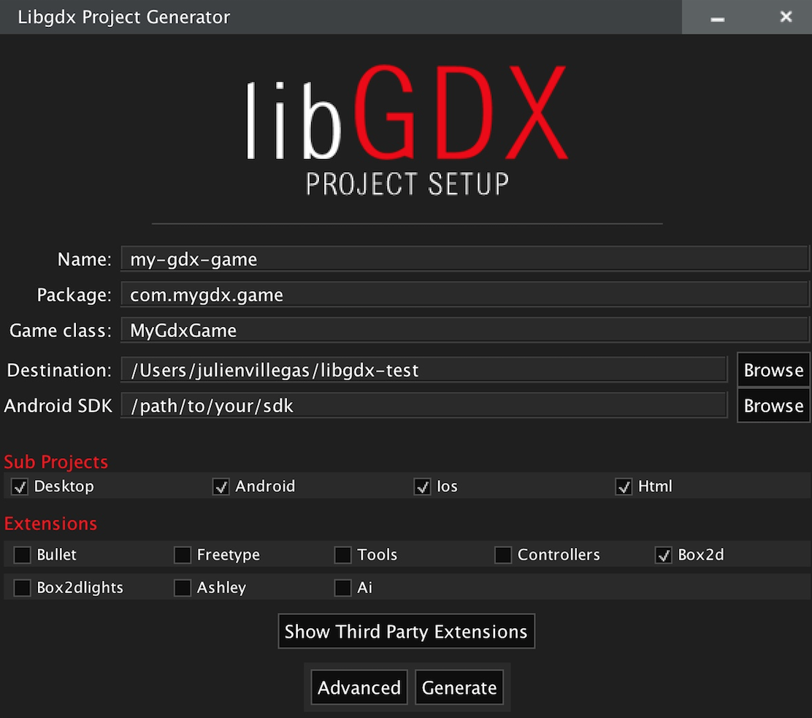

Game Development Using Java
For me game development is more of a journey than a skill - there doesn’t appear to be a clearly defined boundary at which point you have made it as a games programmer. As I will explain in a future blog on HTML games, it takes about a day to learn how to code pong from scratch (or 20 minutes if you have experience).
On the other end of the spectrum, it takes hundreds of developers, with qualifications, years of experience and millions to produce a mainstream game such as Grand Theft Auto. There is an ocean of knowledge to be learned and game development has a rich history and diverse heritage.All the above considered, on the scale I rate myself as just beyond the point of dipping my toes in the water. In this instalment, I will cover some of the learnings I have encountered coding games in Java using the ASDK - Android Software Development Kit.
My progress with creating Super Mario for a mobile device can be found here: Adam's GitHub. Also a video of this can be found here at Super Mario. Finally I also managed to fully complete flappy birds - but have more I wish to add in the future.
LIBGDX
Whilst Java has many libraries, which includes useful functions, for gaming it can get quite tedious constantly defining things like x,y,z position, velocities, vectors. delta time and so on. LIBGDX saves a lot of the low level design and encapsulates a lot of functions that can be used on the android platform. It is highly recommended to use this lib or a similar one.
The link for LIBGDX can be found here at BadLogic.
Once you have filled the form for your specified game - a jar file will be produced with a project file directory that can be imported into android SDK. For more detailed instructions on how to set up LIBGDX - feel free to contact me.
CREATE DESKTOP MODE
Instead of having to boot the simulation/game onto your phone or device every time you need to test your code - its far easier to create a run configuration set to your desktop. The high level steps are here -
- ANDROID DROPDOWN -------> EDIT CONFIGURATION
- PLUS SIGN ----------------------> APPLICATION
- NAME -----------------------------> DESKTOP
- CLASS PATH ---------------------> DESKTOP
- MAIN CLASS ---------------------> DESKTOP LAUNCHER (THE CLASS THAT GETS RUN WHEN WE select RUN)
- WORKING DIR--------------------> ANDROID ASSETS FOLDER (LIB GDX LOOKS FOR EVeRYTHING IN ASSETS FOLDER)
Select Apply and confirm. Run the code using the desktop run mode. When ever you wish to test the code in your game, simply click the desktop from the dropdown and click the green play icon. You Should now see the badlogic logo, if you don't - then check your desktop configuration and import of LIBGDX
Create a State package
In order to create our different game states (such as Pause, Menu and Play state), we need to bundle them up into a package.Here are the steps to create our package called STATES and our first class called State
- CORE---->JAVA
- COM.BIRDS.FLAPPY--->CREATE NEW PACKAGE(called states)
- STATES------> CREATE NEW CLASS (called State)
State class will be an abstract class in which all other states like play state, will extend this. The reason we use an abstract class, is if all our other classes were to have a common feature, such as initializing the camera, then there is no need to write that piece of code 5 times for five classes. Simply put it in the abstract class, and have all the other classes extend it. If this is confusing, I would recommend going through some more JAVA examples first (I prefer to learn by example). Otherwise feel free to contact me for a breakdown
Now its time to flesh out our abstract class, I have put some of the basics in the code snippet below to get you started
public abstract class State {
protected OrthographicCamera cam ;
protected Vector3 mouse ;
protected GameStateManager gsm ;
protected State(GameStateManager gsm ){
this .gsm = gsm;
cam = new OrthographicCamera();
mouse = new Vector3();
}
protected abstract void handleInput();
public abstract void update();
/// takes in DT difference beteen one frame rendered and next frame rendered
public abstract void render(SpriteBatch ab);
// Sprite batch container for everything to render
}
COMING UP
Now that we have the LIBGDX installed and a desktop run configuration, its time to start talking about some of the specific functions that will be required for making a basic game. For the purpose of this lesson, we will consider small games that requires less memory. Some things that will be covered are game-loops, textures, Orthographic cameras, and game worlds. I will also cover methods for coding in collisions, interaction with objects such as the ground.
Adam McMurchie 10/April/2017